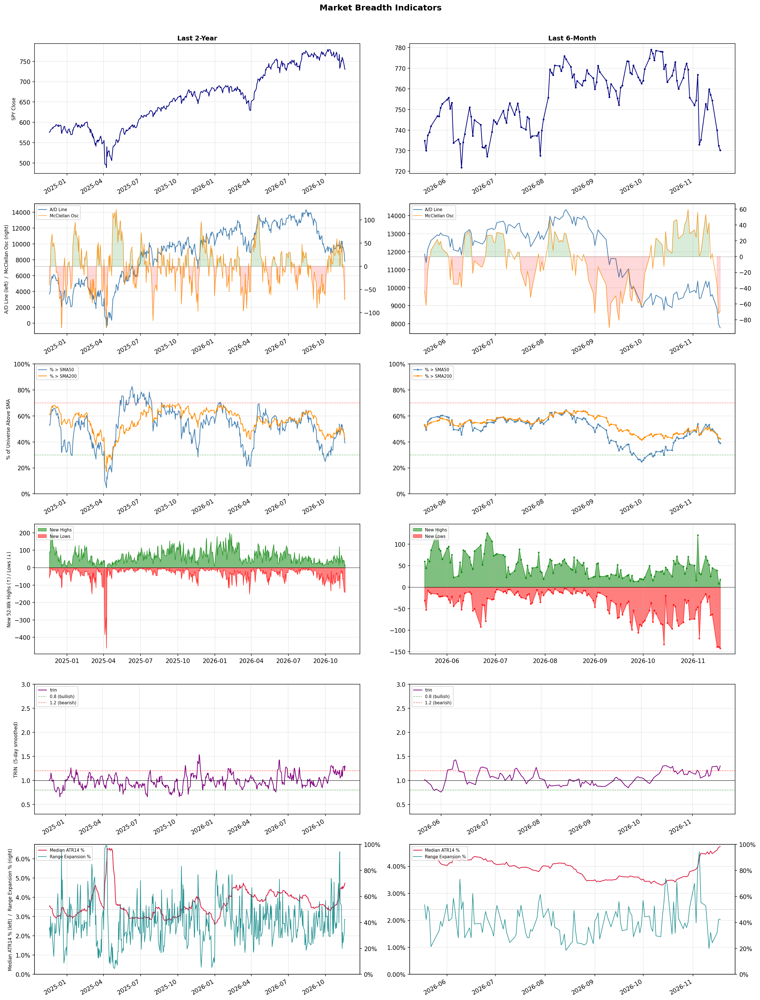

A daily market breadth and sector rotation report for active investors
| Item | Read |
|---|---|
| Regime | Defensive |
| Risk posture | Defensive |
| Universe | 1,310 stocks tracked · 18 new 52-week highs · 30 active swing setups |
| Breadth | only 39.1% of tracked stocks are above SMA50, new lows exceed new highs (142 vs 18), McClellan oscillator (breadth momentum) is negative at -69.0 |
| Leadership | Apparel Manufacturing, Discount Stores, and Advertising Agencies |
| Weakest groups | Other Industrial Metals & Mining, Uranium, and Copper |
Use this report to prioritize research and chart review; validate entries, stops, liquidity, earnings, and risk before acting.
| Item | Read |
|---|---|
| Primary read | Defensive regime with Defensive risk posture. |
| Research queue | VFC, FIGS, PVH, LEVI, ZGN |
| Leadership focus | Apparel Manufacturing, Discount Stores, and Advertising Agencies |
| Caution list | Other Industrial Metals & Mining, Uranium, and Copper |
| Review prompt | Check extension risk, chart location, fundamentals, valuation, and earnings before using any research row. |
| Item | Read |
|---|---|
| Primary read | 4 active risk warnings; use screen output as watchlist input only. |
| Bullish screens | SHO, LTH, TXNM, BILL |
| Bearish screens | ARCO, BKD, KEP, COIN, GNW |
| Alerts / levels | Automated trigger, stop, ATR, liquidity, reward/risk, and event-risk levels are pending future enrichment. |
| Review prompt | Open the linked chart, define trigger and invalidation, then check liquidity and event risk independently. |
Risk Posture: Defensive — screen backdrop favors caution; require independent risk review before new exposure
Metric context: McClellan below -50 = elevated selling pressure; below -100 = washout territory. Range Expansion = share of stocks with daily range above their 20-day average. Signal Density = share of tracked names appearing in signal screens.
| Breadth Date | % > SMA50 | % > SMA200 | New Highs | New Lows | McClellan | Median Range | Avg Range | Median ATR14 | Range Expansion | Signal Density |
|---|---|---|---|---|---|---|---|---|---|---|
| 2026-11-18 | 39.1% | 42.4% | 18 | 142 | -69.0 | 3.9% | 4.6% | 4.7% | 42.4% | 19.2% |

Prior comparison date: November 17, 2026
| Metric | Prior | Current | Change |
|---|---|---|---|
| Regime | Defensive | Defensive | unchanged |
| Risk Posture | Defensive | Defensive | unchanged |
| % > SMA50 | 40.2% | 39.1% | -1.1 pts |
| % > SMA200 | 43.0% | 42.4% | -0.6 pts |
| New Highs | 8 | 18 | +10 |
| New Lows | 140 | 142 | -2 |
Top-10 industries entering: Leisure and Restaurants. Top-10 industries leaving: Insurance - Property & Casualty and Medical Care Facilities. New multi-signal long setups: LTH. New multi-signal short setups: AGNT, ARCO, BKD, BL, CELC, CRMD, FIS, GNW, KEP.
| Status | Tickers | Read |
|---|---|---|
| Added | AGNT, ARCO, BKD, BL, CELC, CRMD, FIS, GNW | New technical screen matches vs prior report. |
| Removed | AMSC, BLSH, CRSP, CTMX, DXC, FLNC, GMED, INOD | No longer present in today's technical screen matches. |
| Still Active | ALLO, BABA, BILL, BRUN, BTDR, COIN, GNL, HTZ | Appeared in both current and prior reports. |
| Promoted | none | Model Screen Score improved by at least 15 points. |
| Downgraded | none | Model Screen Score declined by at least 15 points. |
| Direction | Industry | ETF | Prior Rank | Current Rank | Days | Rank Change |
|---|---|---|---|---|---|---|
| Rose | Airlines | N/A | 78 | 13 | 28 | +65 |
| Rose | REIT - Retail | N/A | 76 | 12 | 42 | +64 |
| Rose | Resorts & Casinos | N/A | 85 | 28 | 42 | +57 |
| Rose | Integrated Freight & Logistics | N/A | 71 | 21 | 42 | +50 |
| Rose | Leisure | N/A | 58 | 9 | 42 | +49 |
Bull: The rising relative strength of the Airlines industry can be attributed to a robust recovery in travel demand, as highlighted by optimistic forecasts in articles like "Best Airline Stocks to Buy in 2026" from The Motley Fool, which suggests a positive outlook for airline stocks. Despite recent turbulence from geopolitical tensions, as noted in Reuters, the market appears to be focusing on the long-term growth potential, with companies like United Airlines showing resilience and market confidence, as evidenced by their stock performance following disappointing earnings, indicating strong investor sentiment in the sector.
Bear: While the rising relative strength of the Airlines industry may suggest a recovery in travel demand, it is crucial to consider the underlying volatility and risks associated with geopolitical tensions, such as the recent US-Iran conflict, which can significantly disrupt travel and consumer confidence. Moreover, the positive sentiment around stocks like United Airlines, despite disappointing earnings, may reflect a short-term speculative bubble rather than sustainable growth, as investors could be overlooking the potential for increased operational costs, labor disputes, and fluctuating fuel prices that can severely impact profitability in the long run.
Verdict: The Airlines industry is experiencing rising relative strength primarily due to a robust recovery in travel demand and positive investor sentiment, despite recent geopolitical tensions. However, key risks remain, as ongoing conflicts like the US-Iran situation could disrupt travel and consumer confidence, potentially leading to increased operational costs and volatility that may hinder sustainable growth. Investors should closely monitor these geopolitical developments and operational challenges when considering airline stocks.
Sources: Google News
Bull: The rising relative strength of the Retail REIT sector can be attributed to its demonstrated resilience and growth potential, as highlighted by reports like Morningstar's "Best REITs to Buy" and Seeking Alpha's analysis of FrontView REIT's diverse portfolio, which showcases durability amid economic challenges. Additionally, despite higher interest rates and industry headwinds, Yahoo Finance notes that investors are still considering retail REITs, indicating confidence in their ability to adapt and thrive in a changing market landscape. This combination of robust performance and investor interest positions Retail REITs favorably compared to other sectors.
Bear: While the rising relative strength of Retail REITs may appear promising, it is crucial to recognize that this sector faces significant headwinds, including persistent inflation, rising interest rates, and changing consumer behavior towards e-commerce. The notion of resilience may be overstated, as many retail tenants are struggling with declining foot traffic and increased operational costs, which could lead to higher vacancy rates and reduced rental income for REITs. Furthermore, the bullish sentiment may be driven more by short-term performance metrics rather than sustainable long-term growth prospects, making it a risky investment in a potentially volatile economic environment.
Verdict: The Retail REIT sector's rising strength is fundamentally driven by its ability to adapt to changing market conditions and a growing investor confidence in its resilience, as evidenced by positive analyses from reputable sources. However, key risks remain, particularly from persistent inflation and shifting consumer behaviors towards e-commerce, which could undermine tenant performance and lead to increased vacancy rates, making careful selection of investments critical in this volatile environment.
Sources: Google News
Bull: The Resorts & Casinos sector is experiencing rising relative strength due to a robust recovery in consumer discretionary spending, as highlighted by Q3 earnings reports from major players like MGM Resorts, which indicate strong performance despite broader economic challenges. Additionally, the focus on strategic deal-making within the industry, as mentioned in the Reuters article, suggests that companies are positioning themselves for future growth, further enhancing investor confidence and driving stock performance. This positive sentiment is echoed in multiple analyses projecting strong potential for casino stocks leading into 2026, as noted by both the San Francisco Examiner and The Motley Fool.
Bear: While the bull thesis highlights a recovery in consumer discretionary spending and strategic deal-making, it overlooks the potential risks posed by economic uncertainty and changing consumer behaviors. The casino industry is highly sensitive to macroeconomic fluctuations, and any downturn could significantly impact revenue. Furthermore, the focus on deal-making may distract from addressing underlying operational challenges, and the projected growth through 2026 could be overly optimistic given the competitive landscape and potential regulatory hurdles that may arise.
Verdict: The Resorts & Casinos sector's rising strength is primarily driven by a rebound in consumer discretionary spending, as evidenced by strong Q3 earnings from key players like MGM Resorts, which reflects heightened consumer confidence and willingness to spend on leisure activities. However, investors should remain cautious of the bear case, as economic uncertainty and shifting consumer behaviors could pose significant risks to revenue, potentially undermining the industry's projected growth trajectory through 2026.
Sources: Google News
Bull: The Integrated Freight & Logistics sector is experiencing rising relative strength due to increased demand for efficient logistics solutions, as highlighted by Kennedy's significant investment in a new logistics center with Expeditors, indicating robust growth in the sector. Additionally, partnerships like Groundtruth's collaboration with J.B. Hunt to tackle industry-wide billing challenges reflect a commitment to innovation and operational efficiency, further enhancing the sector's attractiveness to investors. These factors, combined with positive market sentiment as seen in recommendations for top transportation stocks, suggest a strong bullish outlook for the industry.
Bear: While the Integrated Freight & Logistics sector may show rising relative strength, this could be misleading as it often reflects short-term market sentiment rather than sustainable growth. The heavy reliance on a single logistics provider like Expeditors for Kennedy's new center raises concerns about potential operational risks and vulnerabilities in supply chain management. Additionally, despite the positive headlines, the industry faces significant headwinds such as rising fuel costs, labor shortages, and ongoing supply chain disruptions, which could undermine profitability and long-term growth prospects.
Verdict: The Integrated Freight & Logistics sector is likely experiencing growth due to heightened demand for efficient logistics solutions, driven by strategic investments and innovative partnerships that enhance operational efficiency. However, investors should remain cautious of the key risks highlighted by the bear case, including reliance on single providers and external pressures such as rising fuel costs and labor shortages, which could jeopardize long-term profitability and stability in the sector.
Sources: Google News
Bull: The Leisure industry is experiencing a rising relative strength due to a robust recovery in travel and tourism as consumer demand rebounds post-pandemic, highlighted by articles from The Motley Fool and Yahoo Finance that identify top-performing stocks in the sector. Additionally, the ongoing interest in leisure and recreation, despite some challenges, suggests a resilient consumer base willing to spend on experiences, as noted by Zacks Investment Research. This positive sentiment is further reinforced by the potential for AI-driven innovations to enhance operational efficiencies and customer experiences, creating long-term growth opportunities in the sector.
Bear: While the leisure industry may currently exhibit rising relative strength, this trend could be misleading as it is largely driven by pent-up demand post-pandemic, which may not be sustainable in the long term. Economic headwinds such as inflation, rising interest rates, and potential recession fears could dampen consumer spending on discretionary activities, leading to a decline in travel and leisure stocks. Furthermore, the mention of AI-driven innovations, while promising, may not materialize quickly enough to offset the immediate challenges facing the industry, including labor shortages and operational disruptions.
Verdict: The leisure industry's rising strength is fundamentally driven by a robust recovery in travel and tourism as consumer demand rebounds post-pandemic, supported by increased spending on experiences. However, the key risk lies in potential economic headwinds, such as inflation and rising interest rates, which could dampen discretionary spending and undermine the sustainability of this growth. Investors should remain cautious and monitor macroeconomic indicators closely while considering opportunities in companies that demonstrate resilience and adaptability in the face of these challenges.
Sources: Google News
| Direction | Industry | ETF | Prior Rank | Current Rank | Days | Rank Change |
|---|---|---|---|---|---|---|
| Fell | Semiconductor Equipment & Materials | SOXX | 5 | 81 | 42 | -76 |
| Fell | Semiconductors | SOXX | 4 | 77 | 42 | -73 |
| Fell | Computer Hardware | XLK | 10 | 83 | 42 | -73 |
| Fell | Electronic Components | XLK | 6 | 78 | 42 | -72 |
| Fell | Copper | COPX | 13 | 85 | 35 | -72 |
Bear: While the long-term fundamentals of the semiconductor sector may appear promising, the current market dynamics suggest significant headwinds that cannot be overlooked. The recent selloffs in key companies like Arm and Marvell, coupled with the historically low turnover in China's A-shares, indicate a broader lack of confidence and demand in the semiconductor space, raising concerns about overvaluation and the sustainability of growth projections. Additionally, the volatility surrounding earnings reports, particularly from major players like NVIDIA, suggests that the sector is more vulnerable to short-term shocks than bullish analysts may acknowledge.
Bull: The Semiconductor Equipment & Materials sector is experiencing a decline in relative strength primarily due to heightened volatility and negative sentiment surrounding key players like Arm and Marvell, which have seen significant selloffs ahead of NVIDIA's earnings report. This trend is compounded by the overall market environment, as evidenced by the low turnover in China's A-shares and the broader concerns reflected in recent headlines, indicating a cautious outlook among investors regarding semiconductor demand and performance in the near term. However, the long-term fundamentals remain strong, with analysts projecting robust growth in the sector, particularly driven by advancements in AI and other emerging technologies.
Verdict: The semiconductor equipment and materials sector is currently facing a decline due to heightened volatility and negative sentiment stemming from significant selloffs in key companies like Arm and Marvell, alongside cautious investor sentiment reflected in low turnover in China's A-shares. While long-term growth prospects remain strong, particularly with advancements in AI, the key risk is that current market dynamics may indicate overvaluation and a lack of confidence in sustaining demand, especially given the sector's vulnerability to short-term earnings shocks. Investors should approach the sector with caution, monitoring earnings reports closely while considering potential adjustments to their positions based on market sentiment.
Sources: Google News
Bear: While the bull analyst posits that the recent dip in semiconductor stocks is merely a profit-taking phase followed by a rebound, the reality may be more concerning. The rotation out of AI and semiconductor stocks indicates a fundamental shift in investor sentiment driven by macroeconomic uncertainties, including rising interest rates and supply chain disruptions, which could signal a more prolonged downturn. Furthermore, the notion of "buying the dip" may be misguided if the underlying demand for semiconductors does not recover as expected, particularly with the potential for a slowdown in key markets such as consumer electronics and automotive sectors.
Bull: The recent decline in the relative strength of the semiconductor industry can be attributed to a rotation of investment capital away from AI and semiconductor stocks, as highlighted in the Seeking Alpha article. This shift may be driven by profit-taking after a strong performance in these sectors, alongside a broader market reassessment of growth prospects in light of macroeconomic uncertainties. However, the rebound in semiconductor stocks, as noted by Yahoo Finance, suggests that investors are beginning to see value and are buying the dip, indicating a potential bottoming out phase for the sector.
Verdict: The semiconductor industry's recent decline appears to be driven by a combination of profit-taking after a strong performance and a broader reassessment of growth prospects amid macroeconomic uncertainties, such as rising interest rates and supply chain disruptions. While there may be opportunities to buy the dip, the key risk lies in the potential for a prolonged downturn if demand from critical markets, like consumer electronics and automotive, fails to recover as anticipated. Investors should closely monitor macroeconomic indicators and sector-specific demand trends before making significant investment decisions.
Sources: Google News
Bear: While the bull analyst attributes the decline in the Computer Hardware sector to a broader sell-off and a shift towards emerging technologies, this overlooks the fundamental challenges facing traditional hardware companies, including increasing competition, margin pressure, and the cyclical nature of the industry. Additionally, the negative sentiment surrounding AI hardware stocks, as indicated by CIO perspectives urging investors to pivot away from this sector, suggests a deeper, more systemic issue that could hinder recovery and growth in the Computer Hardware space, particularly as companies grapple with rising costs and diminishing returns on investment.
Bull: The recent decline in relative strength for the Computer Hardware sector can be attributed to a broader sector-wide sell-off, as evidenced by the significant drop in Sandisk's stock, which reflects investor caution amid macroeconomic uncertainties. Additionally, the shift in focus towards emerging technologies like quantum computing, highlighted in multiple articles, suggests that investors may be reallocating capital away from traditional hardware stocks in favor of sectors perceived as having higher growth potential, particularly as sentiments around AI hardware stocks turn negative.
Verdict: The decline in the Computer Hardware sector is primarily driven by fundamental challenges such as increasing competition, margin pressure, and a cyclical downturn, compounded by a broader market sell-off and negative sentiment towards AI hardware stocks. Investors should be cautious, as the bear case highlights significant risks, including rising costs and diminishing returns on investment, which could hinder recovery and growth in the industry. To navigate this trend, investors may consider reallocating capital towards emerging technologies or companies with strong competitive advantages to mitigate risks associated with traditional hardware investments.
Sources: Google News
Bear: While the bull analyst attributes the electronic components industry's relative weakness to a shift in investor focus towards high-growth sectors like robotics and memory stocks, this overlooks the fundamental challenges within the electronic components sector itself. The ongoing supply chain disruptions, rising raw material costs, and increasing competition from low-cost manufacturers are significant headwinds that are likely to persist, undermining the profitability and growth potential of companies in this space. Furthermore, the mixed results from Q3 for key players like CTS and Knowles indicate that even within the sector, there are deeper issues affecting performance that cannot be solely explained by external market trends.
Bull: The relative weakness of the Electronic Components industry can be attributed to a broader market focus on high-growth sectors such as robotics, as highlighted in The Motley Fool's article on the best robotics stocks to buy in 2026. Additionally, the emphasis on memory stocks as the hottest trade in the tech sector, as noted by Business Insider, suggests that investors are reallocating their capital towards more specialized segments within technology, thereby creating downward pressure on the overall electronic components sector. This shift in investor sentiment, combined with the recent Q3 performance recap indicating mixed results for companies like CTS and Knowles, further underscores the challenges faced by the industry in maintaining relative strength.
Verdict: The electronic components industry's decline is primarily driven by persistent supply chain disruptions, rising raw material costs, and intense competition from low-cost manufacturers, which undermine profitability and growth potential. While the shift in investor focus towards high-growth sectors like robotics and memory stocks exacerbates the situation, the fundamental challenges within the sector are significant and likely to continue. Investors should closely monitor these internal pressures, as they pose a key risk to recovery and performance in the electronic components market.
Sources: Google News
Bear: While the bull analyst attributes the recent decline in copper's relative strength primarily to tariff uncertainties, this overlooks deeper, structural issues within the copper market. The significant sell-offs in major mining companies indicate not just a reaction to tariffs but also a broader concern over slowing global demand, particularly from key consumers like China, which is grappling with economic headwinds. Additionally, the volatility highlighted in the sector suggests that investor confidence is shaken, and the anticipated demand from emerging technologies like AI may not be sufficient to offset the current bearish sentiment and potential oversupply risks in the near term.
Bull: The recent decline in copper's relative strength can be attributed to heightened uncertainty surrounding tariffs, as indicated by the Yahoo Finance headline on copper stocks tumbling due to tariff doubts. This uncertainty has led to significant sell-offs in major copper mining companies, such as Freeport-McMoRan and Teck Resources, which are sensitive to trade policies. Additionally, the volatility in the sector highlighted by Barlow’s Research Roundup suggests that investor sentiment may be cautious, impacting overall demand for copper stocks despite their long-term potential, particularly in relation to emerging technologies like AI, as noted in the Seeking Alpha article.
Verdict: The recent decline in the copper industry is primarily driven by heightened uncertainty surrounding tariffs and broader concerns over slowing global demand, particularly from China, which is facing economic challenges. While the potential for emerging technologies like AI to boost demand exists, the key risk lies in the possibility of oversupply and continued bearish sentiment, which could further depress copper prices in the near term. Investors should closely monitor trade policy developments and global economic indicators to gauge the market's trajectory.
Sources: Google News
| Industry | Rank | ETF | 7d | 14d | 28d | 42d | Chg 42d | Size | 20D | 60D | Composite | Active Setups |
|---|---|---|---|---|---|---|---|---|---|---|---|---|
| Apparel Manufacturing | 1 | N/A | 3 | 1 | 11 | 23 | +22 | 6 | 12.3% | 23.7% | 0.950 | 0 |
| Discount Stores | 2 | XRT | 12 | 3 | 6 | 12 | +10 | 7 | 8.2% | 14.5% | 0.950 | 0 |
| Advertising Agencies | 3 | N/A | 1 | 38 | 43 | 40 | +37 | 7 | 22.2% | 13.4% | 0.944 | 0 |
| Specialty Retail | 4 | XRT | 4 | 4 | 17 | 25 | +21 | 13 | 12.5% | 18.8% | 0.903 | 0 |
| Insurance Brokers | 5 | N/A | 13 | 5 | 16 | 24 | +19 | 6 | 5.9% | 1.8% | 0.851 | 0 |
| Restaurants | 6 | N/A | 10 | 7 | 23 | 44 | +38 | 16 | 11.4% | 5.3% | 0.833 | 0 |
| REIT - Hotel & Motel | 7 | XLRE | 5 | 6 | 5 | 11 | +4 | 9 | 2.4% | 9.6% | 0.829 | 0 |
| Household & Personal Products | 8 | XLP | 6 | 9 | 7 | 17 | +9 | 11 | 5.5% | 9.5% | 0.826 | 0 |
| Leisure | 9 | N/A | 15 | 25 | 36 | 58 | +49 | 9 | 13.1% | 2.0% | 0.812 | 0 |
| Beverages - Non-Alcoholic | 10 | XLP | 7 | 13 | 26 | 50 | +40 | 7 | 6.7% | 1.5% | 0.808 | 0 |
Rank columns (7d–42d) show the industry's rank that many trading days ago — lower is stronger. Chg 42d = rank change vs 42 trading days ago — positive means the industry moved up. 20D and 60D are the mean stock return within the industry over that period. Active Setups: count of today's swing-trade candidates from this industry appearing across all signal screens.
| Industry | Rank | ETF | 7d | 14d | 28d | 42d | Chg 42d | Size | 20D | 60D | Composite | Active Setups |
|---|---|---|---|---|---|---|---|---|---|---|---|---|
| Other Industrial Metals & Mining | 87 | N/A | 87 | 86 | 83 | 81 | -6 | 21 | -26.6% | -49.2% | 0.019 | 0 |
| Uranium | 86 | URA | 86 | 87 | 87 | 83 | -3 | 6 | -26.4% | -52.2% | 0.022 | 0 |
| Copper | 85 | COPX | 80 | 79 | 54 | 30 | -55 | 6 | -26.7% | -40.3% | 0.053 | 0 |
| Electrical Equipment & Parts | 84 | XLI | 82 | 84 | 85 | 63 | -21 | 12 | -21.4% | -39.2% | 0.062 | 0 |
| Computer Hardware | 83 | XLK | 85 | 83 | 55 | 10 | -73 | 15 | -27.7% | -34.7% | 0.074 | 0 |
| Gold | 82 | GDX | 64 | 66 | 58 | 55 | -27 | 25 | -16.5% | -33.6% | 0.106 | 0 |
| Semiconductor Equipment & Materials | 81 | SOXX | 78 | 85 | 63 | 5 | -76 | 17 | -17.8% | -25.3% | 0.112 | 0 |
| REIT - Mortgage | 80 | N/A | 83 | 70 | 86 | 87 | +7 | 11 | -11.9% | -30.8% | 0.133 | 0 |
| Gambling | 79 | N/A | 70 | 67 | 84 | 84 | +5 | 5 | -10.5% | -31.2% | 0.141 | 0 |
| Electronic Components | 78 | XLK | 77 | 81 | 67 | 6 | -72 | 10 | -13.0% | -21.9% | 0.154 | 0 |
Rank columns (7d–42d) show the industry's rank that many trading days ago — lower is stronger. Chg 42d = rank change vs 42 trading days ago — positive means the industry moved up. 20D and 60D are the mean stock return within the industry over that period. Active Setups: count of today's swing-trade candidates from this industry appearing across all signal screens.
These are research candidates from top-ranked stocks, capped at five names per industry to avoid over-concentration. Returns shown (60D, 120D, 250D) are historical — they reflect where prices have already moved, not forward expectations. Extension Risk flags names that may require extra patience or a better entry point. They are not buy signals.
Chart: TV = TradingView chart (opens in browser); PDF = local chart file (if downloaded).
| Ticker | Name | Industry | Industry Rank | Market Cap | 60D Hist | 120D Hist | 250D Hist | Extension Risk | Research Reason | Chart |
|---|---|---|---|---|---|---|---|---|---|---|
| VFC | VF Corp | Apparel Manufacturing | 1 | N/A | 52.4% | 23.5% | 46.1% | Extended | Top-ranked in industry; extended | TV |
| FIGS | FIGS Inc | Apparel Manufacturing | 1 | N/A | 45.8% | 82.0% | 129.6% | Constructive | Top-ranked in industry | TV |
| PVH | PVH Corp | Apparel Manufacturing | 1 | N/A | 31.4% | 5.0% | 34.6% | Constructive | Top-ranked in industry | TV |
| LEVI | Levi Strauss & Co. | Apparel Manufacturing | 1 | N/A | 14.9% | 5.2% | 22.9% | Constructive | Top-ranked in industry | TV |
| ZGN | Ermenegildo Zegna NV | Apparel Manufacturing | 1 | N/A | 5.0% | -1.5% | 49.3% | Constructive | Top-ranked in industry | TV |
| WMT | Walmart | Discount Stores | 2 | N/A | 20.9% | 10.3% | 27.7% | Constructive | Top-ranked in industry | TV |
| BJ | BJ's Wholesale Club Holdings | Discount Stores | 2 | N/A | 17.5% | 30.0% | 21.4% | Constructive | Top-ranked in industry | TV |
| COST | Costco | Discount Stores | 2 | N/A | 14.4% | 15.0% | 23.9% | Constructive | Top-ranked in industry | TV |
| DLTR | Dollar Tree | Discount Stores | 2 | N/A | 5.9% | 22.3% | 42.5% | Constructive | Top-ranked in industry | TV |
| TGT | Target | Discount Stores | 2 | N/A | 2.2% | 32.5% | 99.5% | Constructive | Top-ranked in industry | TV |
| APP | Applovin | Advertising Agencies | 3 | N/A | 25.9% | -36.2% | -26.3% | Constructive | Top-ranked in industry | TV |
| STGW | Stagwell | Advertising Agencies | 3 | N/A | 25.7% | 56.2% | 111.8% | Constructive | Top-ranked in industry | TV |
| TTD | The Trade Desk | Advertising Agencies | 3 | N/A | 17.1% | -28.0% | -61.4% | Constructive | Top-ranked in industry | TV |
| MGNI | Magnite | Advertising Agencies | 3 | N/A | 16.0% | 93.4% | 104.8% | Constructive | Top-ranked in industry | TV |
| EVC | Entravision Communications | Advertising Agencies | 3 | N/A | 6.5% | -3.8% | 246.9% | Constructive | Top-ranked in industry | TV |
| ASO | Academy | Specialty Retail | 4 | N/A | 68.5% | 39.2% | 74.7% | Extended | Top-ranked in industry; extended | TV |
| ARHS | Arhaus | Specialty Retail | 4 | N/A | 54.8% | 104.0% | 63.2% | Extended | Top-ranked in industry; extended | TV |
| EVGO | EVgo Inc | Specialty Retail | 4 | N/A | 10.7% | -25.7% | -42.5% | Constructive | Top-ranked in industry | TV |
| TSCO | Tractor Supply | Specialty Retail | 4 | N/A | 10.3% | 24.6% | -24.0% | Constructive | Top-ranked in industry | TV |
| WOOF | Petco Health and Wellness | Specialty Retail | 4 | N/A | -0.7% | -9.0% | -1.1% | Lagging | Top-ranked in industry; lagging | TV |
These are technical screen matches from existing signal files. They are not trade recommendations. Trigger, stop, ATR, liquidity, reward/risk, and event risk still require separate validation until those inputs are available.
Model Screen Score is weighted by signal count, industry rank, freshness, and setup type. It is not a probability of profit, expected return, or suitability rating. Industry cap: max 3 candidates per industry.
Signal glossary: Momentum Pullback = stock in an uptrend that has pulled back 10–30% and shows re-entry conditions. MA Compression = short- and long-term moving averages converging, often preceding a directional move. Three-Day Up/Down = three consecutive closes in the same direction. New 52Wk High/Low = price reached a new annual extreme.
Chart: TV = TradingView chart (opens in browser); PDF = local chart file (if downloaded).
| Ticker | Industry | Setups | Close | Industry Rank | Signal Count | Model Screen Score | Reason | Chart |
|---|---|---|---|---|---|---|---|---|
| SHO | REIT - Hotel & Motel | New 52Wk High; Three-Day Up | 13.17 | 7 | 2 | 93 | Multi-signal; top industry breakout | TV |
| LTH | Leisure | New 52Wk High; Three-Day Up | 48.09 | 9 | 2 | 85 | Multi-signal; top industry breakout | TV |
| TXNM | Utilities - Regulated Electric | MA Compression; New 52Wk High | 58.98 | 17 | 2 | 82 | Multi-signal; new-high strength | TV |
| BILL | Software - Application | New 52Wk High; Three-Day Up | 66.01 | 48 | 2 | 65 | Multi-signal; new-high strength | TV |
Bearish setups — stocks making new lows or showing persistent downside patterns. Validate carefully before acting.
| Ticker | Industry | Setups | Close | Industry Rank | Signal Count | Model Screen Score | Reason | Chart |
|---|---|---|---|---|---|---|---|---|
| ARCO | Restaurants | New 52Wk Low; Three-Day Down | 6.69 | 6 | 2 | 63 | Multi-signal; new-low weakness | TV |
| BKD | Medical Care Facilities | New 52Wk Low; Three-Day Down | 8.59 | 11 | 2 | 55 | Multi-signal; new-low weakness | TV |
| KEP | Utilities - Regulated Electric | New 52Wk Low; Three-Day Down | 9.09 | 17 | 2 | 47 | Multi-signal; new-low weakness | TV |
| COIN | Financial Data & Stock Exchanges | New 52Wk Low; Three-Day Down | 110.51 | 25 | 2 | 47 | Multi-signal; new-low weakness | TV |
| GNW | Insurance - Life | New 52Wk Low; Three-Day Down | 7.87 | 31 | 2 | 40 | Multi-signal; new-low weakness | TV |
| GNL | REIT - Diversified | New 52Wk Low; Three-Day Down | 6.18 | 34 | 2 | 40 | Multi-signal; new-low weakness | TV |
| QDEL | Medical Devices | New 52Wk Low; Three-Day Down | 9.57 | 36 | 2 | 40 | Multi-signal; new-low weakness | TV |
| HTZ | Rental & Leasing Services | New 52Wk Low; Three-Day Down | 1.30 | 40 | 2 | 40 | Multi-signal; new-low weakness | TV |
| LZ | Specialty Business Services | New 52Wk Low; Three-Day Down | 4.53 | 42 | 2 | 35 | Multi-signal; new-low weakness | TV |
| UNIT | REIT - Specialty | New 52Wk Low; Three-Day Down | 3.84 | 45 | 2 | 35 | Multi-signal; new-low weakness | TV |
| BL | Software - Application | New 52Wk Low; Three-Day Down | 24.68 | 48 | 2 | 35 | Multi-signal; new-low weakness | TV |
| BTDR | Software - Application | New 52Wk Low; Three-Day Down | 3.89 | 48 | 2 | 35 | Multi-signal; new-low weakness | TV |
| OI | Packaging & Containers | New 52Wk Low; Three-Day Down | 4.60 | 51 | 2 | 35 | Multi-signal; new-low weakness | TV |
| BRUN | Software - Infrastructure | New 52Wk Low; Three-Day Down | 4.54 | 52 | 2 | 35 | Multi-signal; new-low weakness | TV |
| BABA | Internet Retail | New 52Wk Low; Three-Day Down | 84.37 | 54 | 2 | 35 | Multi-signal; new-low weakness | TV |
| JMIA | Internet Retail | New 52Wk Low; Three-Day Down | 2.74 | 54 | 2 | 35 | Multi-signal; new-low weakness | TV |
| SE | Internet Retail | New 52Wk Low; Three-Day Down | 68.60 | 54 | 2 | 35 | Multi-signal; new-low weakness | TV |
| FIS | Information Technology Services | New 52Wk Low; Three-Day Down | 26.73 | 56 | 2 | 35 | Multi-signal; new-low weakness | TV |
| AGNT | Real Estate Services | New 52Wk Low; Three-Day Down | 2.61 | 57 | 2 | 35 | Multi-signal; new-low weakness | TV |
| NMRK | Real Estate Services | New 52Wk Low; Three-Day Down | 10.00 | 57 | 2 | 35 | Multi-signal; new-low weakness | TV |
| ALLO | Biotechnology | New 52Wk Low; Three-Day Down | 0.70 | 61 | 2 | 25 | Multi-signal; new-low weakness | TV |
| CELC | Biotechnology | New 52Wk Low; Three-Day Down | 55.60 | 61 | 2 | 25 | Multi-signal; new-low weakness | TV |
| CRMD | Biotechnology | New 52Wk Low; Three-Day Down | 4.50 | 61 | 2 | 25 | Multi-signal; new-low weakness | TV |
| STLA | Auto Manufacturers | New 52Wk Low; Three-Day Down | 3.54 | 63 | 2 | 25 | Multi-signal; new-low weakness | TV |
| LU | Credit Services | New 52Wk Low; Three-Day Down | 6.35 | 64 | 2 | 25 | Multi-signal; new-low weakness | TV |
| QFIN | Credit Services | New 52Wk Low; Three-Day Down | 4.74 | 64 | 2 | 25 | Multi-signal; new-low weakness | TV |
How To Use This Report
| Use | Purpose |
|---|---|
| Market map | Start with breadth, regime, risk warnings, and what changed since the prior report. |
| Industry scan | Use leading, deteriorating, rising, and declining industries to focus research. |
| Research queue | Treat long-term candidates as names for deeper fundamental, valuation, and chart review. |
| Technical review | Treat bullish and bearish screen matches as watchlist inputs that require independent trigger, stop, liquidity, and event-risk checks. |
| Source follow-up | Use chart links and source files to verify raw inputs before relying on any row. |
What This Report Is Not
| Not | Meaning |
|---|---|
| Investment advice | The report does not evaluate personal objectives, risk tolerance, tax situation, account type, or suitability. |
| Buy/sell recommendation | Named tickers are research candidates or screen matches, not recommendations to transact. |
| Price target | The report does not provide fair value estimates, targets, or expected returns. |
| Trade plan | Trigger, stop, sizing, reward/risk, liquidity, and event-risk review remain separate user work. |
| Performance claim | Model Screen Score is not validated historical performance or a forecast of future results. |
| Item | Note |
|---|---|
| Version | Daily Report Methodology v1 |
| Model Screen Score | Screen-fit rank based on signal count, industry rank, freshness, and setup type. |
| Not predictive proof | The score is not expected return, probability of profit, historical validation, or suitability analysis. |
| Industry ranks | Composite industry ranks use existing daily ranking outputs and historical rank columns when available. |
| Research candidates | Long-term rows are research candidates from ranked stocks and leading industries, with historical returns labeled as historical only. |
| Technical matches | Bullish and bearish rows are screen matches requiring independent chart, trigger, stop, liquidity, and event-risk review. |
| Source | Status | Rows | Path |
|---|---|---|---|
| Market breadth | present | 1253 | breadth_20261118.csv |
| Industry composite rankings | present | 87 | all_industry_composite_20261118.csv |
| Top ranked stocks | present | 91 | top_ranked_composite_20261118.csv |
| All ranked stocks | present | 1310 | all_stocks_composite_sorted_20261118.csv |
| Top momentum pullbacks | present | 1465 | top_momentum_pullbacks_20261118.csv |
| MA compression | present | 1465 | ma_compression_stocks_20261118.csv |
| Three-day up/down | present | 263 | three_day_up_down_stocks_20261118.csv |
| New 52-week members | present | 160 | breadth_new_52wk_members_20261118.csv |
This report is generated from automated technical screens and is for informational and research purposes only. It is not investment advice, a solicitation, or a recommendation to buy or sell any security. Past performance is not indicative of future results. You are solely responsible for your own investment decisions. Consult a licensed financial advisor before acting on any information herein.